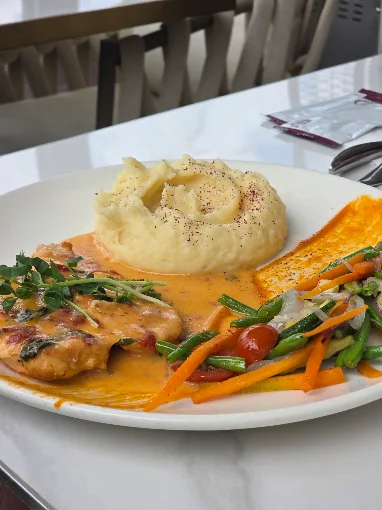
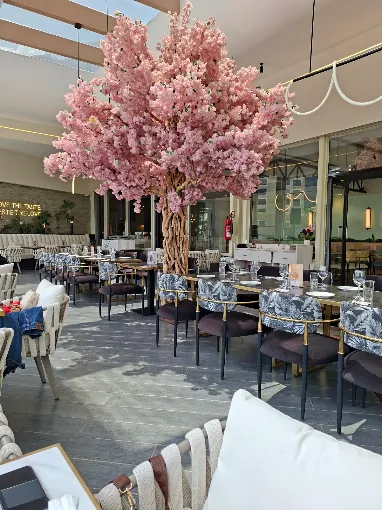
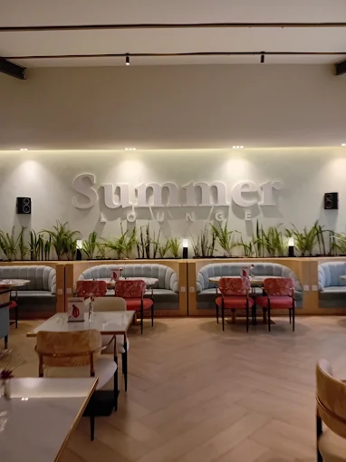
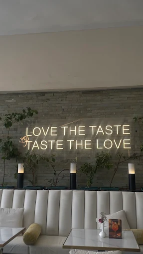
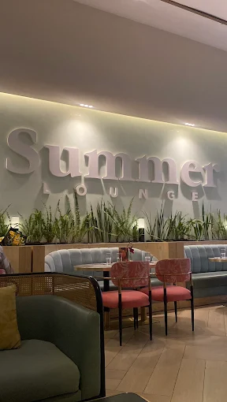

Main course
Chicken & Seasonal Vegetables
Comforting, colourful and plated for an easy lunch or relaxed dinner.

Sarit Centre · Westlands · Nairobi
Contemporary plates, elegant interiors and a social atmosphere designed for brunches, long dinners and memorable nights out.
The Summer experience
The Summer Lounge moves naturally from breakfast and business lunches into dinner, cocktails and weekend evenings.
Soft lighting, statement interiors and playful colour make the space equally suited to a quiet table or a celebration.



The atmosphere
Layered seating, warm lighting, natural greenery and a lively social energy create a polished room that never feels formal.
Inside Summer
Plan your visit
Karuna Road, Westlands, Nairobi
Confirm event and holiday hours directly.
Tables, celebrations and group bookings.